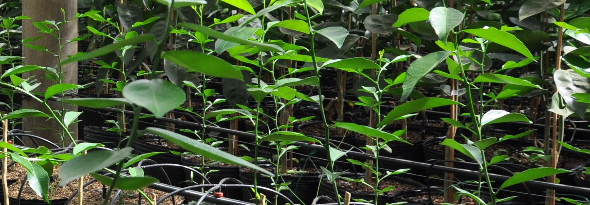
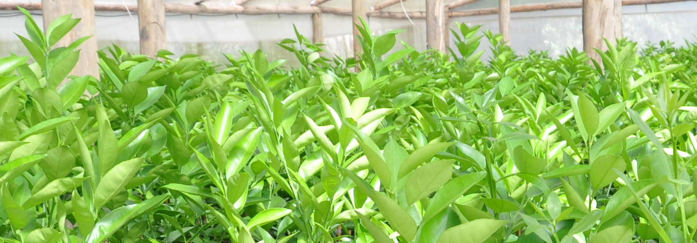
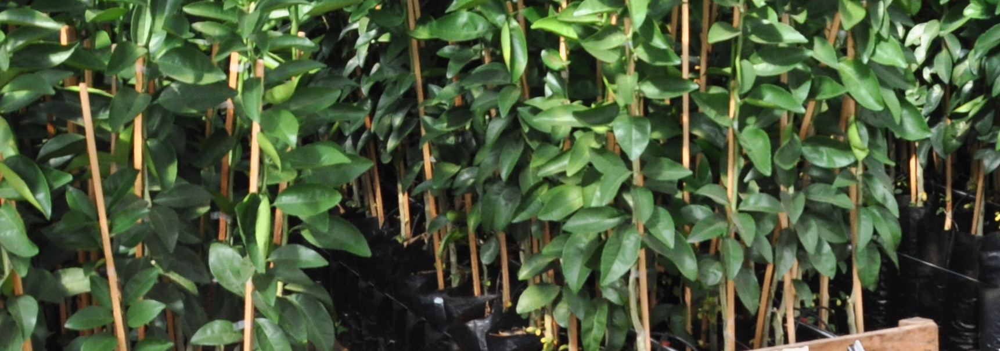
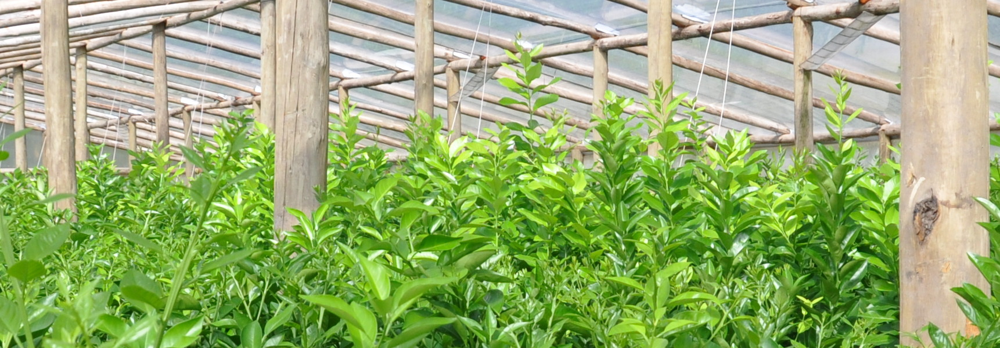
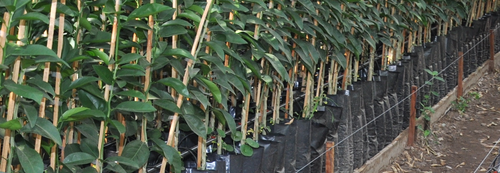

Inicio
Historia
Producción
Variedades y Comercialización
de Sergio Cornaló
Variedades y Comercialización
Estas son las variadades que tenemos disponibles en nuestras instalaciones.
Variedades de plantas
NARANJA
Valencia Late
Valencia Late-Clon-Frost
Valencia Seedly
Midknight
Salustiana
Washington Parent
New Hall
POMELO y LIMON
Star Ruby
Genova
MANDARINAS
Murcott
Clemenules
Nova
Okitsu
Portainjerto disponibles
Trifolio Concordia
Citrangelo Troyer





Yemas para la venta
NARANJA
Valencia Late
Valencia Frost
Valencia Midknight
Salustiana
New Hall
Lane Late
POMELO y LIMON
Star Ruby
Genova
MANDARINAS
Murcott
Clemenules
Nova
Okitsu
“Citricultura Protegida”
Diseño: Marcelo&Guido PASCARIELLO - Imágenes: Ruben ABALO